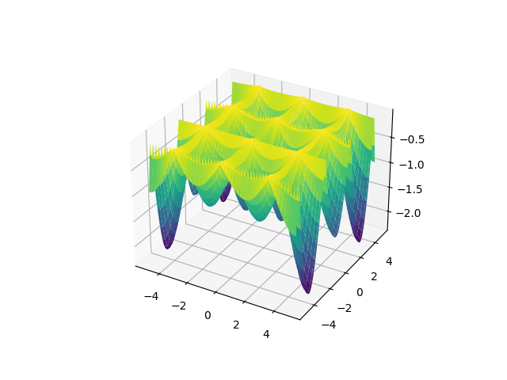

Das Ganze ist etwas anderes als die Summe seiner Teile (the whole is something else than the sum of its parts) -- Kurt Koffka
I hear criticisms using the words "oh but that's too reductionist" on analysis' that might involve break an issue into individual components.. This criticism is usually misguided and I will try to outline why. They miss the interaction, the nonlinearity of those "pieces" and on the reverse side, the power that stems from the combination of those little pieces that gave us much of the modern world today. It's key we understand both sides of this equation.
In a system we see pieces, but how are they together? How were they added? Linear addition of components is uninteresting.. They are simple to see, and frankly will not achieve much beyond their domain. Twice of something that do X, can do 2X. I have A, add B, I get A+B. There is nothing to this. The analysis and creation of such mechanisms yield to average results.
However when scientists analyze interesting systems, or engineers build them, what they look for is individual components, yes, but also the nonlinear ways they can interact. It is this interaction that leads to power. Look at the way the V-engine shaft turns,
It is a simple rotation, right. One shaft. There are two other axes connected to it. But look at the connection, at different angles. Rotation easy. Connecting easy. Rods easy. But connect two, to the same shaft, at angle, gives you this,
We just created an orderly movement, one push after another, and guaranteed certain force, using "simple components".
What if I wanted to create non-rhytmic push action? I have simple rotation,
import pandas as pd
import numpy as np
import matplotlib.pyplot as plt
from mpl_toolkits.mplot3d import Axes3D
from matplotlib import cm
L = 5
x = np.linspace(-L, L, 100)
y = np.linspace(-L, L, 100)
X, Y = np.meshgrid(x, y)
Z = -np.abs( np.sin(X)*np.cos(Y)*np.exp(np.abs( 1- np.sqrt(X**2+Y**2)/np.pi )) )
fig = plt.figure()
ax = fig.gca(projection='3d')
surf = ax.plot_surface(X, Y, Z, cmap=cm.viridis)
plt.savefig('out.png')
Hölder table function
$$ f(x,y) = - \bigg| \sin(x) \cos(y) \exp \left( \bigg| 1 - \frac{\sqrt(x^2+y^2)}{\pi} \bigg| \right) \bigg| $$
https://en.wikipedia.org/wiki/Test_functions_for_optimization

The Making of BTS https://youtu.be/qBCM1Fy-ByY
{kind=link}